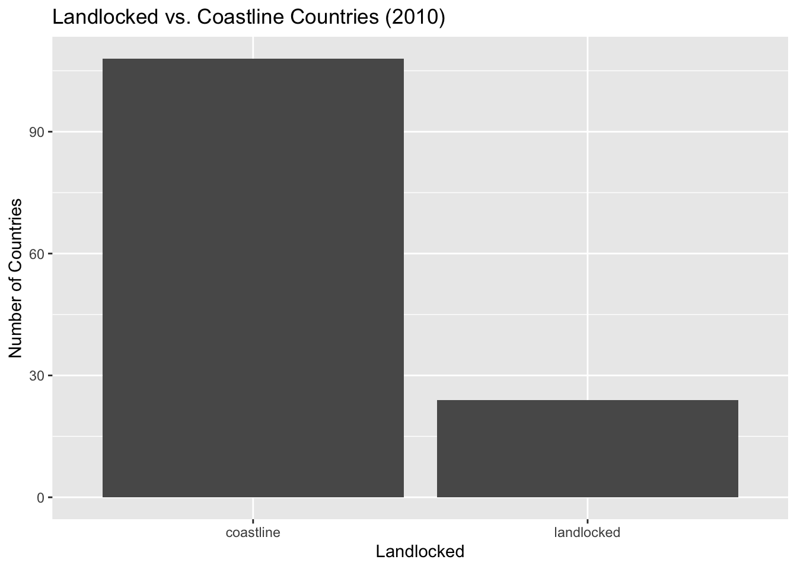
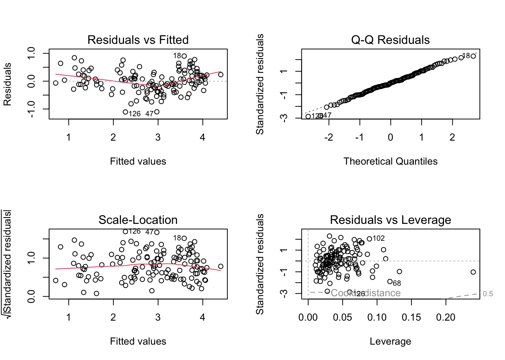
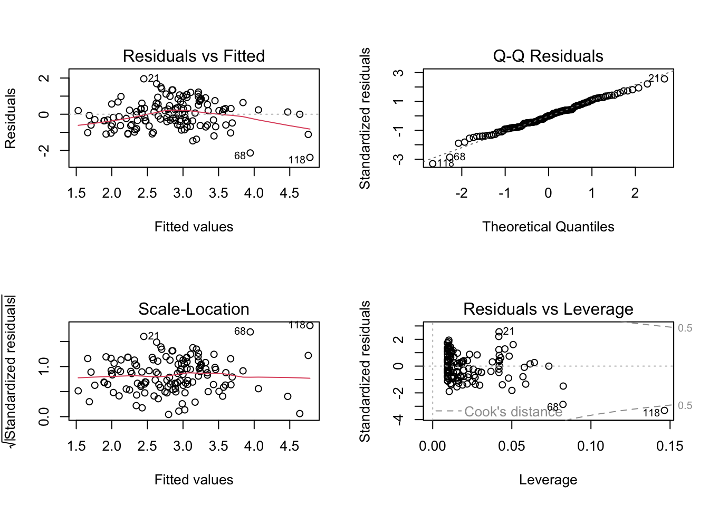
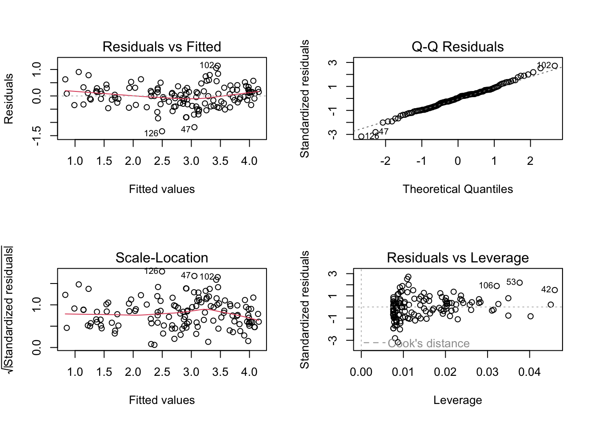

Rows: 194 Columns: 67
── Column specification ────────────────────────────────────────────────────────
Delimiter: ","
chr (2): geo, name
dbl (45): 1980, 1981, 1982, 1983, 1984, 1985, 1986, 1987, 1988, 1989, 1990, ...
lgl (20): 1960, 1961, 1962, 1963, 1964, 1965, 1966, 1967, 1968, 1969, 1970, ...
ℹ Use `spec()` to retrieve the full column specification for this data.
ℹ Specify the column types or set `show_col_types = FALSE` to quiet this message.
gap <-read_csv('gapminder_2025.csv')
Rows: 193 Columns: 7
── Column specification ────────────────────────────────────────────────────────
Delimiter: ","
chr (4): geo, name, world_4region, landlocked
dbl (3): gdp, life_exp, log_gdp
ℹ Use `spec()` to retrieve the full column specification for this data.
ℹ Specify the column types or set `show_col_types = FALSE` to quiet this message.
hdi <-read_csv('hdi_human_development_index.csv')
Rows: 192 Columns: 36
── Column specification ────────────────────────────────────────────────────────
Delimiter: ","
chr (2): geo, name
dbl (34): 1990, 1991, 1992, 1993, 1994, 1995, 1996, 1997, 1998, 1999, 2000, ...
ℹ Use `spec()` to retrieve the full column specification for this data.
ℹ Specify the column types or set `show_col_types = FALSE` to quiet this message.
Rows: 179 Columns: 23
── Column specification ────────────────────────────────────────────────────────
Delimiter: ","
chr (2): geo, name
dbl (5): 1990, 1995, 2000, 2005, 2010
lgl (16): 1991, 1992, 1993, 1994, 1996, 1997, 1998, 1999, 2001, 2002, 2003, ...
ℹ Use `spec()` to retrieve the full column specification for this data.
ℹ Specify the column types or set `show_col_types = FALSE` to quiet this message.
daily_inc <-read_csv('mincpcap_cppp (1).csv')
Rows: 193 Columns: 303
── Column specification ────────────────────────────────────────────────────────
Delimiter: ","
chr (2): geo, name
dbl (301): 1800, 1801, 1802, 1803, 1804, 1805, 1806, 1807, 1808, 1809, 1810,...
ℹ Use `spec()` to retrieve the full column specification for this data.
ℹ Specify the column types or set `show_col_types = FALSE` to quiet this message.
Rows: 133 Columns: 53
── Column specification ────────────────────────────────────────────────────────
Delimiter: ","
chr (2): geo, name
dbl (51): 1960, 1961, 1962, 1963, 1964, 1965, 1966, 1967, 1968, 1969, 1970, ...
ℹ Use `spec()` to retrieve the full column specification for this data.
ℹ Specify the column types or set `show_col_types = FALSE` to quiet this message.
Pulling data from year we want and Cleaning it
We use 2010 data. Response: Daily income is quantitative and measures average income per person per day in dollars. The quantitative predictors are phones per 100 people, residential energy use as a percentage of total energy use, HDI, and maternal deaths per 100,000 live births. Income, phones, and mortality are nonnegative; Landlocked status is categorical: coastline or landlocked. 194 countries in the combined data, missing are 1 for income, 1 for subscriptions, 61 for energy, 4 for HDI, and 15 for mortality; landlocked status and country name are each missing for 1 country, geo codes are complete. Missing values overlap across countries. Removing incomplete rows = 132 countries and excludes 62.
geo name cell_phones_per_100_ppl
Length :132 Length :132 Min. : 1.212
N.unique :132 N.unique :132 1st Qu.: 70.437
N.blank : 0 N.blank : 0 Median :101.643
Min.nchar: 3 Min.nchar: 2 Mean : 96.963
Max.nchar: 3 Max.nchar: 22 3rd Qu.:119.508
Max. :204.969
residential_energy_use_pctg landlocked human_development_ind
Min. : 1.362 Length :132 Min. :0.4150
1st Qu.:17.777 N.unique : 2 1st Qu.:0.6518
Median :25.370 N.blank : 0 Median :0.7505
Mean :31.758 Min.nchar: 9 Mean :0.7358
3rd Qu.:38.130 Max.nchar: 10 3rd Qu.:0.8458
Max. :93.820 Max. :0.9470
maternal_mortality daily_income
Min. : 2.0 Min. : 1.902
1st Qu.: 12.0 1st Qu.: 8.244
Median : 44.5 Median : 15.873
Mean :114.9 Mean : 26.577
3rd Qu.:127.5 3rd Qu.: 40.825
Max. :730.0 Max. :103.316
Saving Data Into New File
write_csv(clean_2010, "clean_2010.csv")
Displaying Each Variable
Landlocked
table(clean_2010$landlocked)
coastline landlocked
108 24
ggplot(clean_2010, aes(x = landlocked)) +geom_bar() +labs(title ="Landlocked vs. Coastline Countries (2010)",x ="Landlocked", y ="Number of Countries")

Of the 132, 108 (81.8%) have a coastline and 24 (18.2%) are landlocked. The bar chart shows that coastline countries outnumber landlocked countries by a lot.
Daily Income
ggplot(clean_2010, aes(x = daily_income)) +geom_histogram(bins =30) +labs(title ="Daily Income (2010)", x ="Daily Income", y ="Count")
# A tibble: 1 × 5
mean median sd min max
<dbl> <dbl> <dbl> <dbl> <dbl>
1 26.6 15.9 24.3 1.90 103.
# Six countries with the lowest valuesclean_2010 |>arrange(daily_income) |>select(name, geo, daily_income) |>head()
# A tibble: 6 × 3
name geo daily_income
<chr> <chr> <dbl>
1 Congo, Dem. Rep. cod 1.90
2 Eritrea eri 2.28
3 Mozambique moz 2.57
4 Zambia zmb 3.03
5 Benin ben 3.11
6 Togo tgo 3.17
# Six countries with the highest values (displayed in ascending order)clean_2010 |>arrange(daily_income) |>select(name, geo, daily_income) |>tail()
# A tibble: 6 × 3
name geo daily_income
<chr> <chr> <dbl>
1 USA usa 75.5
2 Switzerland che 81.9
3 Luxembourg lux 84.8
4 Brunei brn 88.8
5 Qatar qat 99.0
6 Singapore sgp 103.
Daily income is right-skewed: the mean is 26.58 per person per day, with a median of 15.87 and a standard deviation of 24.32 in income units. Most countries have lower incomes,a smaller number of high-income countries The Democratic Republic of the Congo has the lowest value (1.90), while Singapore (103.32) and Qatar (99.03) have the highest values.
Cell Phones per 100 People
ggplot(clean_2010, aes(x = cell_phones_per_100_ppl)) +geom_histogram(bins =30) +labs(title ="Cell Phones per 100 People (2010)", x ="Cell Phones", y ="Count")
# A tibble: 1 × 5
mean median sd min max
<dbl> <dbl> <dbl> <dbl> <dbl>
1 97.0 102. 38.0 1.21 205.
# Six countries with the lowest valuesclean_2010 |>arrange(cell_phones_per_100_ppl) |>select(name, geo, cell_phones_per_100_ppl) |>head()
# A tibble: 6 × 3
name geo cell_phones_per_100_ppl
<chr> <chr> <dbl>
1 Myanmar mmr 1.21
2 Eritrea eri 6.29
3 Ethiopia eth 7.57
4 Cuba cub 8.88
5 Congo, Dem. Rep. cod 17.2
6 Mozambique moz 31.4
# Six countries with the highest values (displayed in ascending order)clean_2010 |>arrange(cell_phones_per_100_ppl) |>select(name, geo, cell_phones_per_100_ppl) |>tail()
# A tibble: 6 × 3
name geo cell_phones_per_100_ppl
<chr> <chr> <dbl>
1 Lithuania ltu 158.
2 Russia rus 165.
3 Libya lby 168.
4 Panama pan 183.
5 Montenegro mne 185.
6 Saudi Arabia sau 205.
The mean is 96.96 subscriptions per 100 people, the median is 101.64, and the standard deviation is 38.04. Myanmar has the lowest value (1.21), while Saudi Arabia has the highest (204.97);
Residential Energy Use Percentage
ggplot(clean_2010, aes(x = residential_energy_use_pctg)) +geom_histogram(bins =30) +labs(title ="Residential Energy Use Percentage (2010)", x ="Residential Energy Use", y ="Count")
# A tibble: 1 × 5
mean median sd min max
<dbl> <dbl> <dbl> <dbl> <dbl>
1 31.8 25.4 20.3 1.36 93.8
# Six countries with the lowest valuesclean_2010 |>arrange(residential_energy_use_pctg) |>select(name, geo, residential_energy_use_pctg) |>head()
# A tibble: 6 × 3
name geo residential_energy_use_pctg
<chr> <chr> <dbl>
1 Turkmenistan tkm 1.36
2 Trinidad and Tobago tto 2.37
3 Singapore sgp 2.85
4 Qatar qat 3.65
5 Kyrgyz Republic kgz 5.00
6 UAE are 6.35
# Six countries with the highest values (displayed in ascending order)clean_2010 |>arrange(residential_energy_use_pctg) |>select(name, geo, residential_energy_use_pctg) |>tail()
# A tibble: 6 × 3
name geo residential_energy_use_pctg
<chr> <chr> <dbl>
1 Kenya ken 76.5
2 Eritrea eri 78.5
3 Myanmar mmr 80.7
4 Nigeria nga 81.1
5 Nepal npl 87.4
6 Ethiopia eth 93.8
Has a mean of 31.76%, a median of 25.37%, and a standard deviation of 20.33 . Most countries have smaller residential shares. Turkmenistan has the lowest share (1.36%), and Ethiopia has the highest (93.82%);
Maternal Mortality
ggplot(clean_2010, aes(x = maternal_mortality)) +geom_histogram(bins =30) +labs(title ="Maternal Mortality (2010)", x ="Maternal Deaths per 100,000 Births", y ="Count")
# A tibble: 1 × 5
mean median sd min max
<dbl> <dbl> <dbl> <dbl> <dbl>
1 115. 44.5 161. 2 730
# Six countries with the lowest valuesclean_2010 |>arrange(maternal_mortality) |>select(name, geo, maternal_mortality) |>head()
# A tibble: 6 × 3
name geo maternal_mortality
<chr> <chr> <dbl>
1 Estonia est 2
2 Greece grc 3
3 Singapore sgp 3
4 Austria aut 4
5 Belarus blr 4
6 Italy ita 4
# Six countries with the highest values (displayed in ascending order)clean_2010 |>arrange(maternal_mortality) |>select(name, geo, maternal_mortality) |>tail()
# A tibble: 6 × 3
name geo maternal_mortality
<chr> <chr> <dbl>
1 Congo, Dem. Rep. cod 540
2 Congo, Rep. cog 560
3 Zimbabwe zwe 570
4 Nigeria nga 630
5 Cameroon cmr 690
6 Sudan sdn 730
Maternal mortality is strongly right-skewed: the mean is 114.92 deaths per 100,000 live births, compared with a median of 44.50 and a standard deviation of 160.82. Many countries have relatively low ratios. Estonia has the lowest ratio (2), and Sudan has the highest (730).
HDI
ggplot(clean_2010, aes(x = human_development_ind)) +geom_histogram(bins =30) +labs(title ="Human Development Index (2010)", x ="HDI", y ="Count")
# A tibble: 1 × 5
mean median sd min max
<dbl> <dbl> <dbl> <dbl> <dbl>
1 0.736 0.750 0.143 0.415 0.947
# Six countries with the lowest valuesclean_2010 |>arrange(human_development_ind) |>select(name, geo, human_development_ind) |>head()
# A tibble: 6 × 3
name geo human_development_ind
<chr> <chr> <dbl>
1 Ethiopia eth 0.415
2 Mozambique moz 0.419
3 Congo, Dem. Rep. cod 0.44
4 Haiti hti 0.452
5 Cote d'Ivoire civ 0.465
6 Eritrea eri 0.465
# Six countries with the highest values (displayed in ascending order)clean_2010 |>arrange(human_development_ind) |>select(name, geo, human_development_ind) |>tail()
# A tibble: 6 × 3
name geo human_development_ind
<chr> <chr> <dbl>
1 Australia aus 0.929
2 Singapore sgp 0.932
3 Iceland isl 0.935
4 Germany deu 0.936
5 Switzerland che 0.945
6 Norway nor 0.947
HDI has a mean of 0.736, a median of 0.751, and a standard deviation of 0.143. Values are more concentrated toward the higher end, with a tail toward lower development scores.
Displaying Graphs of Each Variable Related to One Another
The bottom row of the scatterplot matrix shows daily income against each quantitative predictor. These plots describe associations among the retained countries
Cell phones and income: Countries with more cell-phone subscriptions per 100 people have higher daily income. income varies considerably among countries with similar especially at higher rates.
Residential energy share and income: Higher residential energy shares are generally associated with lower daily income. The pattern is not well described by a uniform straight-line decrease across the entire range.
HDI and income: Income generally increases with HDI.
Maternal mortality and income: Countries with higher maternal mortality generally have lower income. Many countries have low maternal mortality but different incomes.
clean_2010 |>ggplot(mapping =aes(x = landlocked, y = daily_income)) +geom_violin() +labs(title ="Daily Income by Landlocked Status (2010)",x ="Landlocked status", y ="Daily income per person")
Coastline countries have a higher mean daily income (27.77) and median (16.85) than landlocked countries (21.20 and 12.29), . The standard deviations are close 24.27 for coastline countries and 24.34 for landlocked countries. The violin plot shows overlap, so landlocked status does not clearly separate countries. There are 108 coastline countries and only 24 landlocked countries in this sample.
All three models below predict natural-log income. For a predictor on its original scale, a one-unit increase changes predicted log income by its coefficient, holding the other predictors fixed. On the income scale, exponentiating that coefficient gives the multiplicative change in the model’s back transformed prediction. A coefficient on log energy or log mortality describes a one-unit change in the log of 1 + the original measurement, not a one-unit change in the original measurement. The landlocked coefficient compares landlocked countries with coastline countries. We will apply these interpretations to the fitted coefficients in the model discussion; simply exponentiating a fitted log value does not automatically give the conditional arithmetic mean of income.
Making Lines of Regression
We fit two multiple regressions and one simple regression to the same 132 countries. Each model predicts natural-log daily income, so its residual standard error (RSE) is in log-income units, not dollars. R-squared describes the fraction of variation in log income explained by the fitted model; adjusted R-squared also accounts for the number of predictors. We use 0.05 as the cutoff when discussing p-values. An overall F-test checks whether all predictor slopes are zero; a small p-value does not prove that the model meets its assumptions.
For all three models, independence is an assumption we cannot confirm from the diagnostic plots. Each row is a different country, but countries may share regional, economic, and historical conditions. We therefore interpret these results as associations in the retained countries, not causal effects, and treat the p-values cautiously when the model assumptions are imperfect.
Call:
lm(formula = log_daily_income ~ cell_phones_per_100_ppl + log_energy +
human_development_ind + log_mortality + landlocked, data = transformed_2010)
Residuals:
Min 1Q Median 3Q Max
-1.10707 -0.24517 -0.00101 0.23675 0.90273
Coefficients:
Estimate Std. Error t value Pr(>|t|)
(Intercept) -0.127473 0.744523 -0.171 0.86433
cell_phones_per_100_ppl 0.001961 0.001300 1.509 0.13383
log_energy -0.166634 0.065416 -2.547 0.01206 *
human_development_ind 4.880395 0.658284 7.414 1.57e-11 ***
log_mortality -0.057311 0.057950 -0.989 0.32456
landlockedlandlocked -0.261677 0.090396 -2.895 0.00447 **
---
Signif. codes: 0 '***' 0.001 '**' 0.01 '*' 0.05 '.' 0.1 ' ' 1
Residual standard error: 0.3993 on 126 degrees of freedom
Multiple R-squared: 0.8431, Adjusted R-squared: 0.8368
F-statistic: 135.4 on 5 and 126 DF, p-value: < 2.2e-16
par(mfrow =c(2, 2))plot(income_model1)

par(mfrow =c(1, 1))
Interpreting the slopes. Holding the other predictors fixed:
One additional cell-phone subscription per 100 people is associated with an increase of 0.00196 in predicted log income, or about 0.20% in the back-transformed income prediction.
A one dunit increase in log(1 + residential energy share) is associated with a decrease of 0.1666 in predicted log income. This is a change in the logged predictor, not a one-percentage-point increase in energy share.
A 0.1 increase in HDI is associated with an increase of 0.4880 in predicted log income, equivalent to about a 62.9% increase in the back-transformed prediction.
A oneunit increase in log(1 + maternal mortality) is associated with a decrease of 0.0573 in predicted log income, not a decrease of 0.0573 dollars.
Landlocked countries have predicted log income 0.2617 lower than coastline countries, equivalent to about a 23.0% lower back transformed prediction.
Model fit. The model explains 84.31% of the variation in log income (adjusted R-squared = 0.8368), with an RSE of 0.3993. Ts p < 0.001, at least one predictor slope differs from zero. Energy (p = 0.0121), HDI (p < 0.001), and landlocked status (p = 0.0045) are significant at 0.05. Cell phones (p = 0.1338) and mortality (p = 0.3246) are not significant after adjusting for the other predictors.
LINE The residual plot has a curved, roughly U-shaped trend, so the linearity assumption is not fully satisfied. The Q–Q plot follows the line through most of its range but not at the tails. The scale location plot shows greater spread in the middle. Normality and equal variance are almost, and the independence concern described above still applies. The model fits much of the variation, but its residual pattern shows that it isnt perfect.
Model 2: Log(Daily Income) vs Log Energy and Landlocked Status
Call:
lm(formula = log_daily_income ~ log_energy + landlocked, data = transformed_2010)
Residuals:
Min 1Q Median 3Q Max
-2.38507 -0.58462 -0.00221 0.55654 1.95616
Coefficients:
Estimate Std. Error t value Pr(>|t|)
(Intercept) 5.8527 0.3435 17.037 < 2e-16 ***
log_energy -0.8989 0.1021 -8.806 7.39e-15 ***
landlockedlandlocked -0.2969 0.1761 -1.685 0.0943 .
---
Signif. codes: 0 '***' 0.001 '**' 0.01 '*' 0.05 '.' 0.1 ' ' 1
Residual standard error: 0.7802 on 129 degrees of freedom
Multiple R-squared: 0.3866, Adjusted R-squared: 0.3771
F-statistic: 40.65 on 2 and 129 DF, p-value: 2.043e-14
par(mfrow =c(2, 2))plot(income_model2)

par(mfrow =c(1, 1))
Interpreting the slopes. Holding landlocked status fixed, a increase in log(1 + residential energy share) is associated with a decrease of 0.8989 in log income. landlocked countries have predicted log income 0.2969 lower than coastline countries. The intercept 5.8527 applies to a coastline country with zero residential energy share
Model fit. The model explains 38.66% of the variation in log income (adjusted R-squared = 0.3771), with an RSE of 0.7802. Its overall F-test has p < 0.001. The energy slope is significant (p < 0.001), but the landlocked slope is not significant at 0.05 (p = 0.0943).
Assumptions. The residual trend goes up and then down. Most points in the Q–Q plot follow the line, but the lower tail some that done. The residual spread is uneven so equal variance is not established.
Call:
lm(formula = log_daily_income ~ human_development_ind, data = transformed_2010)
Residuals:
Min 1Q Median 3Q Max
-1.33415 -0.28607 0.01349 0.23971 1.14232
Coefficients:
Estimate Std. Error t value Pr(>|t|)
(Intercept) -1.7637 0.1932 -9.129 1.15e-15 ***
human_development_ind 6.2551 0.2578 24.266 < 2e-16 ***
---
Signif. codes: 0 '***' 0.001 '**' 0.01 '*' 0.05 '.' 0.1 ' ' 1
Residual standard error: 0.422 on 130 degrees of freedom
Multiple R-squared: 0.8192, Adjusted R-squared: 0.8178
F-statistic: 588.8 on 1 and 130 DF, p-value: < 2.2e-16
par(mfrow =c(2, 2))plot(income_model3)

par(mfrow =c(1, 1))
Interpreting the slope. A 0.1 increase in HDI is associated with an increase of 0.6255 in predicted log income, equivalent to about an 86.9% increase. The intercept is -1.7637, the predicted log income at HDI = 0, which is outside the observed HDI range and is not a meaningful comparison for these countries.
Model fit. HDI alone explains 81.92% of the variation in log income adjusted R-squared = 0.8178), with an RSE of 0.4220. Both the HDI slope test and the overall F-test have p < 0.001. This is strong evidence of an association within this fitted model
Assumptions. The residual trend has a shallow curve, so the relationship is close to linear but not perfect. The Q–Q plot is close to the line in the middle and departs at both tails. The scale-location plot shows more spread in the middle and less at the high end so equal variance isnt clear.
Comparing the Models
Model
Number of predictors
Adjusted R-squared
Residual standard error
Model 1: All five predictors
5
0.8368
0.3993
Model 2: Log energy and landlocked status
2
0.3771
0.7802
Model 3: HDI alone
1
0.8178
0.4220
We prefer Model 1 for its fit to these data. It has the highest adjusted R-squared, and the lowest residual standard error. Model 3 is also good. HDI gives a similar fit with only one predictor, making Model 3 a solid choice when simplicity is the priority. Model 2 explains much less variation and has substantially more residual scatter, so it is the weakest of the three by these measures.
The diagnostic plots keep us from treating any model as a perfect fit. Model 1 still has curvature in its residuals, and Model 3 has some curvature and uneven spread as well. Model 2 shows curvature and a particularly influential observation. We choose Model 1 for its better overall fit.
Our Question
Does the relationship between HDI and daily income look similar for landlocked and coastline countries?
transformed_2010 |>ggplot(mapping =aes(x = human_development_ind,y = log_daily_income,color = landlocked)) +geom_point() +labs(title ="HDI and Daily Income by Landlocked Status (2010)",x ="Human Development Index (HDI)",y ="Log daily income (natural log)",color ="Country type")
Our answer: Yes, the overall pattern looks similar countries with higher HDI generally have higher income in both groups. The colors overlap insead of forming two clearly separate groups. Several landlocked countries have both high HDI and high income, so being landlocked does not automatically mean a country has low income. Some landlocked countries fall below coastline countries with similar HDI, but that is not true everywhere in the plot. There are also fewer landlocked countries in the sample. The graph supports a shared positive pattern, but it does not prove that the relationships are identical or that landlocked status causes income differences.